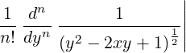

| Up | Next | Prev | PrevTail | Tail |
Following the delimiter that ends the procedure heading must be a single statement defining the action to be performed or the value to be delivered. A terminator must follow the statement. If it is a semicolon, the name of the procedure just defined is printed. It is not printed if a dollar sign is used.
If the result wanted is given by a formula of some kind, the body is just that formula, using the variables in the procedure heading.
Simple Example:
If f(x) is to mean (x+5)*(x+6)/(x+7), the entire procedure definition could read
Then f(10) would evaluate to 240/17, f(a-6) to a*(a-1)/(a+1), and so on.
More Complicated Example:
Suppose we need a function p(n,x) that, for any positive integer n, is the Legendre polynomial of order n. We can define this operator using the textbook formula defining these functions:
|
pn(x) =  y=0 |
Put into words, the Legendre polynomial pn(x) is the result of substituting y = 0 in the nth partial derivative with respect to y of a certain fraction involving x and y, then dividing that by n!.
This verbal formula can easily be written in REDUCE:
Having input this definition, the expression evaluation
would result in the output
If the desired process is best described as a series of steps, then a group or compound statement can be used.
Example:
The above Legendre polynomial example can be rewritten as a series of steps instead of a single formula as follows:
Procedures may also be defined recursively. In other words, the procedure body can include references to the procedure name itself, or to other procedures that themselves reference the given procedure. As an example, we can define the Legendre polynomial through its standard recurrence relation:
The operator rederr in the above example provides for a simple error exit from an algebraic procedure (and also a block). It can take a string as argument.
It should be noted however that all the above definitions of p(n,x) are quite inefficient if extensive use is to be made of such polynomials, since each call effectively recomputes all lower order polynomials. It would be better to store these expressions in an array, and then use say the recurrence relation to compute only those polynomials that have not already been derived. We leave it as an exercise for the reader to write such a definition.
| Up | Next | Prev | PrevTail | Front |